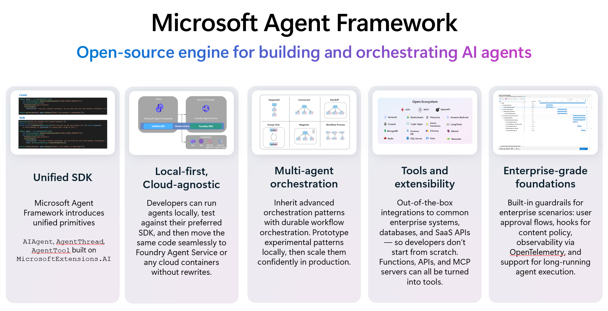

Agent Framework for Python
So far you build and test the acl-remedy-advisor agent entirely in the Foundry portal. The portal is excellent for designing, grounding, and testing a single agent — but real applications call agents from code. That is where the Microsoft Agent Framework comes in.

This is a read-only concept module in the portal-first workshop. It requires a Python environment (and the agent you grounded in Module 07). Read it to understand how the portal agent gets consumed from code; do the full hands-on from the source lab when you're ready to write code.
What the Agent Framework is
The Microsoft Agent Framework is an open-source SDK (Python and .NET) for building, running, and orchestrating AI agents and multi-agent workflows. It unifies the lessons of Semantic Kernel and AutoGen into one consistent programming model that works the same across model providers.
Why it exists
A chat playground gets you a working agent, but a production app needs more:
- Call an agent from your own app, API, or background job.
- Add custom logic and your own function tools around the agent.
- Stream responses to a UI as they're generated.
- Orchestrate several agents into a multi-agent workflow.
- Add observability, middleware, and consistent error handling.
Two ways to work with Foundry
| Pattern | What it does | Used in |
|---|---|---|
FoundryAgent |
Binds to an agent that already exists in Foundry (by name). Its model, instructions, and tools live on the service — you just connect and run. | This module |
FoundryChatClient + Agent |
Declares a model, instructions, and tools directly in code. | Module 10 |
The hands-on connects to the grounded acl-remedy-advisor Prompt Agent from Module 07, runs it from Python, prints the response, then streams it — authenticating with DefaultAzureCredential so no keys appear in your code.
Why it matters
This is the bridge from "agent I clicked together in the portal" to "agent my application calls in production." Same agent, now driven by code, with room for custom tools, streaming, and orchestration.